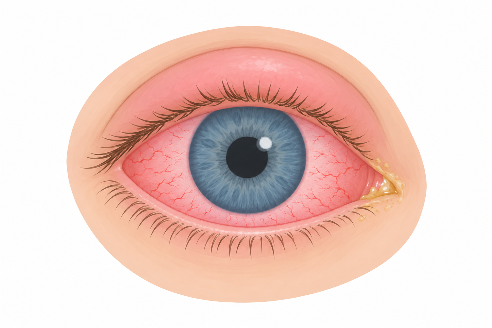
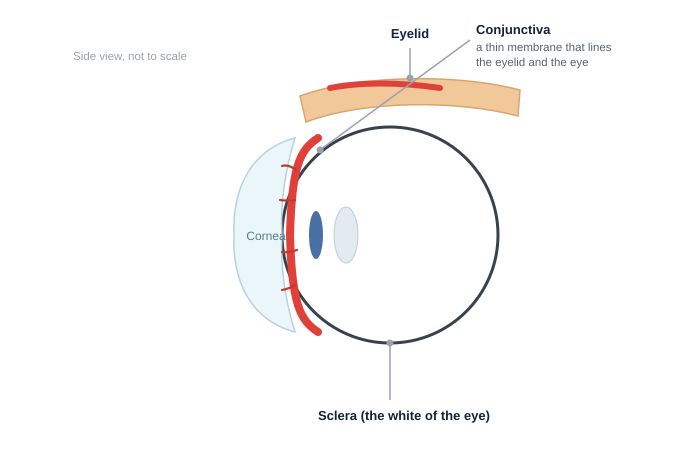
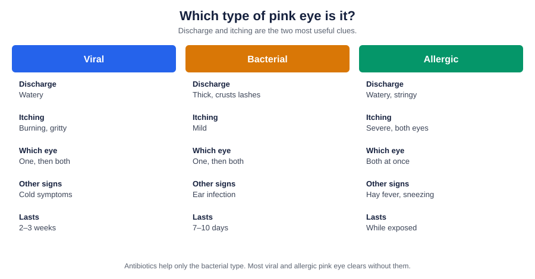
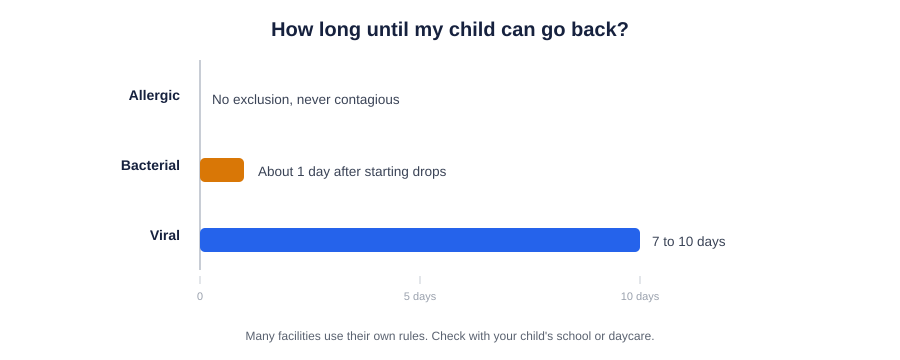
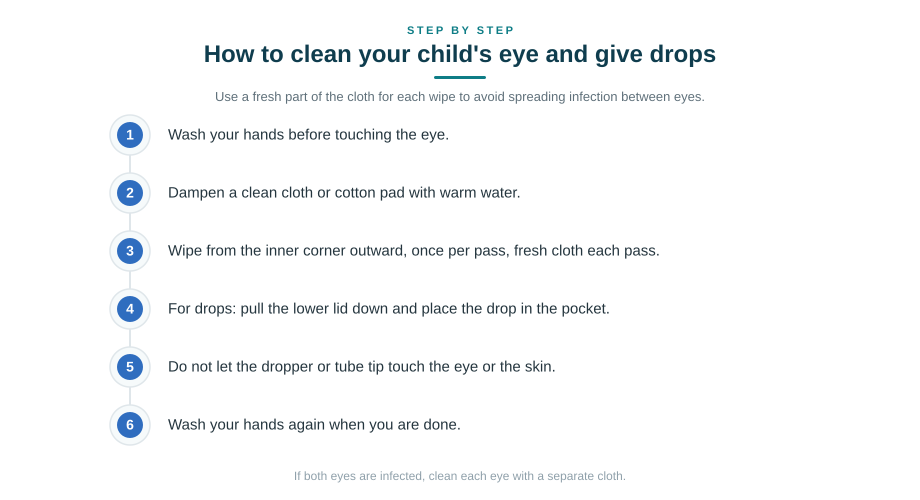

Key Takeaways
- In children, pink eye is more often bacterial than viral: up to 70% of cases are bacterial, the reverse of the adult pattern.
- Most bacterial pink eye clears on its own in 7 to 10 days; topical antibiotics shorten symptoms by only about a day and carry an 8% adverse-reaction rate.
- Antibiotics are not required for school or daycare return, per the American Academy of Pediatrics.
- Red flags that demand in-person care: vision changes, severe pain, eyelid swelling, contact lens wearers, and any newborn.
- With a concurrent ear infection, oral antibiotics are preferred over eye drops.

A red, gooey eye on a child is one of the most common reasons a parent calls a doctor, and the honest truth is that most pink eye resolves on its own with no antibiotics at all. This guide explains how to tell the types apart, when medicine genuinely helps, and which symptoms mean your child needs in-person care.
When to Get Emergency Care
Take a child to a pediatric emergency department or urgent in-person eye evaluation for any of these ([1]; [9]):
Newborns (0 to 28 days)
Any eye redness or discharge in a newborn is a medical emergency ([7]). Neonatal conjunctivitis can be caused by Chlamydia trachomatis (approximately 40% of cases), Neisseria gonorrhoeae, or herpes simplex virus, and can threaten vision if untreated ([1]). Do not use telehealth.
Any age (age-independent red flags)
- Vision changes: blurring, refusal to open the eye, extreme light sensitivity
- Severe eye pain (not mild irritation; actual pain)
- Significant swelling, redness, or warmth of the eyelid or surrounding skin (concern for orbital or preseptal cellulitis)
- Fever with eye involvement or systemic illness
- Vesicles (small blisters) on or near the eyelid: possible HSV; needs ophthalmology
- Recent eye trauma or possible foreign body
- Chemical splash: flush with water immediately for at least 15 minutes and go to the ED
- Contact lens wearer with a red eye: always requires in-person evaluation due to risk of bacterial keratitis and corneal ulcer ([1])
- High-velocity eye injury (BB gun, paintball, airsoft): common in adolescent males ([1])
Symptoms: How the Three Types Actually Present

Clinical presentation is often nonspecific. A 2003 meta-analysis found no reliable clinical signs to distinguish bacterial from viral conjunctivitis; even in culture-positive bacterial cases, 35% had serous or no discharge ([1]). That said, patterns help.
Bacterial conjunctivitis
Common in children. Purulent discharge that mats the eyelashes shut, especially after sleep. Often starts in one eye and spreads to the other within 1 to 2 days. Frequently accompanies otitis media, about one-third of pediatric bacterial conjunctivitis cases have concurrent ear infection, and the pathogens overlap ([2]).
Viral conjunctivitis
Usually caused by adenovirus. Watery or serous discharge. Burning, gritty, or foreign-body sensation. Often includes cold symptoms, sore throat, or preauricular (in front of the ear) lymph node swelling. Highly contagious. Runs its course in 2 to 3 weeks ([1]; [9]).
Allergic conjunctivitis
Affects approximately 1 in 5 children and is the single most common ocular complaint to pediatric providers. Peaks from late childhood into adolescence. Bilateral itching is the defining symptom. Watery discharge. Often seasonal. Frequently accompanies allergic rhinitis or a personal or family allergy history ([1]).

The three types at a glance
| Viral | Bacterial | Allergic | |
|---|---|---|---|
| Discharge | Watery | Thick, yellow-green, crusts lashes shut | Watery, stringy |
| Itching | Burning, gritty | Mild | Severe, both eyes |
| Which eye | Often one, then both | Often one, then both | Both at once |
| Other signs | Cold symptoms, node by ear | Ear infection (1 in 3) | Sneezing, hay fever |
| Contagious | Yes | Yes | No |
| Treatment | Cool compress, tears | Topical antibiotic if indicated | Antihistamine, avoid trigger |
| Lasts | 2–3 weeks | 7–10 days | While exposed |
Dangerous mimics to know about
- Herpes simplex keratitis: vesicles on lids or nearby skin; requires antivirals and ophthalmology
- Orbital or preseptal cellulitis: eyelid swelling, warmth, sometimes fever
- Uveitis: severe pain, photophobia, vision change
- Ocular foreign body: sudden onset, often after trauma; nearly half of pediatric ocular foreign bodies involve wood, sand, or dust ([1])
- Corneal ulcer: especially in contact lens wearers
- Neonatal chlamydial or gonococcal conjunctivitis: see "When to get emergency care"
Causes and Pathogens
Bacterial (age-banded) ([2])
| Age band | Common organisms |
|---|---|
| Newborn <1 week | Neisseria gonorrhoeae (emergency) |
| Newborn 1 to 2 weeks | Chlamydia trachomatis, H. influenzae, S. pneumoniae (emergency) |
| Older infants and toddlers (1 to 5 years), no otitis | H. influenzae, S. pneumoniae, M. catarrhalis, S. aureus |
| Older infants and toddlers with otitis | H. influenzae, S. pneumoniae |
| School-age and adolescent | S. aureus, H. influenzae, S. pneumoniae |
Viral: adenovirus most commonly; also herpes simplex virus, varicella-zoster virus ([8]; [1]).
Allergic: pollen, dust mites, animal dander, and other IgE-mediated triggers ([1]).
Irritant: chemical splash, chlorine, air pollution, foreign body.
When to See a Clinician
May be suitable for telehealth (with a good photograph and clear history):
- Suspected uncomplicated bacterial or allergic pink eye
- No red-flag symptoms
- Child is otherwise well
- Not a contact lens wearer
Requires in-person evaluation:
- Any red flag listed under "When to get emergency care"
- Child under age 5 (young children benefit from in-person evaluation)
- Contact lens wearer
- Recent eye trauma
- Symptoms getting worse rather than better after 2 to 3 days on treatment
- Recurrent conjunctivitis (repeated episodes)
- Concurrent ear pain (may need in-person ear exam)
At a Glance: Where to Seek Care
| Situation | Where to go |
|---|---|
| Newborn (0–28 days) with any eye redness or discharge | Emergency department |
| Vision changes, severe pain, eyelid swelling, or blisters near the eye | Emergency department |
| Contact lens wearer with a red eye | In person, same day |
| Fever with eye symptoms, or worsening on day 2–3 of treatment | In person, same day |
| Clear picture, age 5+, no red flags, good photographs | Telehealth or in-person visit |
| Mild viral or allergic picture, no red flags | Home care, watch and wait |
What's Changed in the Evidence
- A 2023 pediatric review confirmed bacterial etiologies now predominate in children, with a 2022 meta-analysis estimating up to 70% of cases.[1]
- A 2025 meta-analysis found topical corticosteroids improve resolution in infective conjunctivitis, but pediatric risks (cataract, intraocular pressure elevation) keep steroids out of routine care.[5]
- Telehealth outcomes data show eVisits with photographs do not overtreat relative to in-person visits; phone-only triage does, which is why photographs and a real clinician review matter.[3]
Treatment
Bacterial conjunctivitis: should we treat?
This is where clinical judgment matters most. The evidence is worth reading carefully.
Bacterial conjunctivitis is self-limited in the vast majority of cases. A meta-analysis of 11 randomized trials with 3,673 patients found a 10% increase in the rate of clinical improvement with early antibiotic treatment compared to placebo. A more recent Finnish study showed antibiotic drops reduced mean symptom duration from 4.0 days on placebo to 3.8 days on moxifloxacin, a real but small benefit. Antibiotics are not risk-free: 8% of patients report ocular antibiotic adverse reactions, and use is associated with acquired resistance in the conjunctival flora ([1]).
Ocular antibiotic resistance is not theoretical. National surveillance data show 65% resistance among S. pneumoniae isolates to tobramycin, 22% to azithromycin, and 91% MRSA resistance to azithromycin ([2]). Fluoroquinolones retain activity against most S. pneumoniae and H. influenzae but MRSA resistance to fluoroquinolones is increasing.
Given this, three approaches are all evidence-supported for suspected uncomplicated pediatric bacterial pink eye ([1]):
- No antibiotics: supportive care alone
- Delayed antibiotic prescription: treat only if symptoms worsen or persist beyond 2 to 3 days
- Immediate antibiotic treatment
The right choice depends on presentation clarity, family circumstances, and stewardship considerations.
Antibiotic stewardship
Pediatric antibiotic stewardship in outpatient settings is documented as inconsistent. In a 2022 study comparing pediatric urgent care centers to general urgent care, bacterial-infection guideline adherence was 82% at pediatric UCCs versus 59% at nonpediatric UCCs ([4]). A 2020 retrospective study of pediatric conjunctivitis at Mayo Clinic found that antibiotic prescribing was 41.6% via phone triage, 25.7% via eVisit, and 19.8% via in-person visit ([3]). This shows that telehealth for pediatric conjunctivitis, done well and with photographs, does not necessarily drive higher prescribing than in-person visits, but poorly triaged phone-only encounters do.
The AAP position is that an antibiotic should not be prescribed solely to satisfy a daycare or school note requirement when the clinical picture is viral or allergic. Where the clinical picture is clearly bacterial and treatment adds value, treatment is reasonable.
First-line topical antibiotics if indicated
When treatment is chosen, first-line options for uncomplicated pediatric bacterial conjunctivitis are ([1]; [2]):
| Agent | Dosing | Age approval | Notes |
|---|---|---|---|
| Erythromycin 0.5% ophthalmic ointment | Ribbon 2 to 6 times daily | Widely used pediatric | Rising S. aureus resistance; poor H. influenzae activity |
| Trimethoprim-polymyxin B 0.1% / 10,000 U/mL drops | 1 to 2 drops every 4 to 6 hours | 2 months and older | First-line per Mahoney 2023 review |
| Moxifloxacin 0.5% ophthalmic solution | 1 drop 3 times daily for 7 days | 1 year and older | Broad spectrum; preservative-free |
| Azithromycin 1% ophthalmic solution | 1 drop twice daily for 2 days, then daily for 5 days | 1 year and older | Rising resistance in S. pneumoniae and S. aureus |
Symptoms typically improve within 1 to 2 days of starting treatment ([1]).
When oral antibiotics are preferred
Bacterial conjunctivitis with concurrent otitis media (sometimes called conjunctivitis-otitis syndrome): oral antibiotic is preferred over topical ([2]). This scenario is common in children given the overlap between H. influenzae, S. pneumoniae, and M. catarrhalis in both conditions. In one study of children with acute bacterial conjunctivitis, oral cefixime and topical polymyxin B/bacitracin were equally effective at achieving clinical cure in children age 2 months to 6 years ([2]).
Viral conjunctivitis
No antivirals for typical adenoviral conjunctivitis. Treatment is symptomatic: cool compresses, artificial tears. Emphasize hygiene aggressively. One study found adenovirus grown from swabs taken from the hands of 46% of adults with conjunctivitis ([1]). Children with viral conjunctivitis should minimize contact with others for 10 to 14 days from symptom onset.
HSV conjunctivitis (distinguishable by nearby vesicles) requires antivirals and ophthalmology involvement, not standard antibiotics.
Allergic conjunctivitis
Minimize allergen exposure. Topical lubricants (artificial tears) physically wash out allergens. Second-generation topical antihistamines are first-line for mild cases. Combined antihistamine and mast-cell-stabilizing drops (azelastine, olopatadine) are next-step for persistent symptoms. Systemic antihistamines can help when other allergy symptoms are present. Topical steroids are not first-line and should be limited to short courses of 7 days or less under physician direction, given the risk of intraocular pressure elevation ([1]; [6]).
A 2025 systematic review and meta-analysis of corticosteroid use in infective conjunctivitis found improved clinical resolution when steroids were added to standard therapy (OR 1.51, 95% CI 1.19 to 1.92), without significant increase in ocular adverse events ([5]). However, given the specific risks in children (cataract, IOP elevation), topical steroids should not be started for a child without ophthalmology involvement.
What This Costs (2026, Uninsured)
- Erythromycin 0.5% ophthalmic ointment: roughly $11 to $15 cash for a 3.5 g tube.[10]
- Polymyxin B/trimethoprim ophthalmic drops: roughly $10 to $19 cash for a 10 mL bottle.[11]
- Moxifloxacin 0.5% ophthalmic solution: roughly $11 to $21 cash for a 3 mL bottle.[12]
Prices are for the medicine itself and do not include a clinician visit or pharmacy dispensing fees. They shift by pharmacy and region; discount coupons often lower them further.
When Can My Child Return to School or Daycare?

The American Academy of Pediatrics specifically states that antibiotics should not be required for a child to return to school or daycare with pink eye ([1]). In practice, many facilities do require them or require a clinician note.
Practical expectations:
- Bacterial pink eye: most facilities accept return 24 hours after starting antibiotic drops or ointment
- Viral pink eye: most facilities allow return once discharge has cleared or greatly reduced; antibiotics do not help
- Allergic pink eye: not contagious; no exclusion needed once diagnosed
The evidence-based approach: prescribe when clinically indicated, and avoid prescribing solely to satisfy a school policy when the picture is clearly viral. When there is genuine diagnostic uncertainty and a return-to-facility note is needed, clinicians often use a delayed prescription with instructions or a note documenting the viral presentation and expected timeline.
Prevention

- Wash hands frequently, especially after touching the eyes
- Don't share towels, pillowcases, washcloths, or eye makeup
- Change bedding daily during a contagious episode
- Wash sports uniforms and equipment after each use
- Discourage eye rubbing
- Contact lens wearers: never sleep in contacts, replace cases regularly, follow disinfection protocols
Age-Specific Notes
Newborns (0 to 28 days)
Any eye redness or discharge is a medical emergency. Neonatal conjunctivitis can be chlamydial, gonococcal, or herpetic and can threaten vision if untreated. Do not use telehealth ([1]). Congenital nasolacrimal duct obstruction is present in about 20% of infants and mimics conjunctivitis; distinguishing this from infection requires in-person exam.
Infants (1 to 12 months) and toddlers (1 to 4 years)
Bacterial conjunctivitis is common in this group. Concurrent otitis media occurs in about one-third of cases and shifts treatment to oral antibiotics. See a pediatrician in person; rapid in-person examination matters at this age.
School-age children (5 to 12 years)
Photograph-supported virtual evaluation can be appropriate for uncomplicated cases without red flags. Watch for daycare and classroom outbreaks. Adenoviral outbreaks are particularly common and highly contagious.
Adolescents (13 to 17 years)
Contact lens wearers require in-person evaluation for any red eye. Adolescent males have elevated risk of high-velocity eye trauma (BB gun, paintball, airsoft) ([1]). Allergic conjunctivitis peaks in this age group. Consent and confidentiality rules vary by state for adolescents; where applicable, the encounter is documented in accordance with that state's minor-consent statute.
About This Guide
This is general medical education, not a substitute for care from a pediatrician or other clinician who has examined your child. It is reviewed by a physician and updated to reflect current evidence. Always follow the guidance of your child's own clinician.
Frequently Asked Questions
Bacterial and viral pink eye are contagious. Allergic pink eye is not.
Bacterial: 7 to 10 days without treatment; a day or two shorter with topical antibiotics. Viral (adenovirus): 2 to 3 weeks. Allergic: as long as the trigger exposure continues.
Amoxicillin is an oral antibiotic, not an eye drop. For the eye itself, topical antibiotics (drops or ointment) are first-line because they put a much higher concentration of medicine directly on the eye. Amoxicillin, or amoxicillin-clavulanate, is used when there is a concurrent bacterial ear infection (otitis media), which happens in about one-third of pediatric bacterial pink eye cases. For pink eye alone, amoxicillin is not the treatment to reach for.
Often no. Bacterial pink eye typically self-resolves. Antibiotics shorten symptoms by about a day on average and carry an 8% adverse-reaction rate. Talk with your child's clinician about the specific presentation and whether treatment adds meaningful value. If your child also has an ear infection, oral antibiotics are usually preferred over topical.
Depends on the type and the facility's policy. Antibiotics are not medically required for return per the AAP, but many facilities require them anyway. With bacterial pink eye, most facilities accept return 24 hours after starting antibiotic. With viral pink eye, wait until discharge has largely cleared.
Frequent hand washing. Don't share towels, pillowcases, or eye makeup. Wash bedding daily during the contagious period. Discourage eye rubbing. Adenovirus can be grown from the hands of nearly half of adults with viral conjunctivitis. Hand hygiene is the single highest-yield intervention.
Any of the red-flag symptoms: severe pain, vision changes, significant eyelid swelling or warmth, high fever, or vesicles near the eye. A newborn with any eye redness or discharge should be seen immediately.
No. Contact lens wearers with a red eye always need in-person evaluation to rule out bacterial keratitis and corneal ulcer, which are sight-threatening.
Recurrent conjunctivitis warrants in-person evaluation. Consider allergy, chronic blepharitis, nasolacrimal duct obstruction (in younger children), or contact lens problems.
Only under specific circumstances and preferably with ophthalmology involvement. A 2025 meta-analysis showed benefit in infective conjunctivitis, but the risks in children (cataract, elevated intraocular pressure) are meaningful, and steroids are not part of routine pediatric conjunctivitis treatment.
References
- Mahoney MJ, Bekibele R, Notermann SL, Reuter TG, Borman-Shoap EC. Pediatric Conjunctivitis: A Review of Clinical Manifestations, Diagnosis, and Management. Children (Basel). 2023;10(5):808. doi:10.3390/children10050808 PMID: 37238356.
- Pichichero ME. Bacterial Conjunctivitis in Children: Antibacterial Treatment Options in an Era of Increasing Drug Resistance. Clin Pediatr. 2011;50(1):7-13. doi:10.1177/0009922810379045
- Penza KS, Murray MA, Myers JF, Maxson J, Furst JW, Pecina JL. Treating pediatric conjunctivitis without an exam: An evaluation of outcomes and antibiotic usage. J Telemed Telecare. 2020;26(1-2):73-78. doi:10.1177/1357633X18793031
- Mannix MK, Vandehei T, Ulrich E, Black TA, Wrotniak B, Islam S. Pediatric Antibiotic Prescribing and Utilization Practices for RTIs at Private Urgent Care Centers. Clin Pediatr. 2022;61(12):830-839. doi:10.1177/00099228221106554
- Putri LR, Edwar L. Corticosteroid as Treatment in Infective Conjunctivitis: A Systematic Literature Review and Meta-Analysis. J Ocul Pharmacol Ther. 2025;41(4):187-198. doi:10.1089/jop.2024.0110 PMID: 40059644.
- Musleh MG, Bokre D, Dahlmann-Noor AH. Risk of intraocular pressure elevation after topical steroids in children and adults: A systematic review. Eur J Ophthalmol. 2020;30(5):856-866. doi:10.1177/1120672119885050 PMID: 31668084.
- Centers for Disease Control and Prevention. About Pink Eye. Updated April 15, 2024. cdc.gov
- Mayo Clinic. Pink eye (conjunctivitis): Symptoms and causes. Updated January 10, 2025. mayoclinic.org
- Mayo Clinic. Pink eye (conjunctivitis): Diagnosis & treatment. Updated January 10, 2025. mayoclinic.org
- GoodRx. Erythromycin prices, coupons, and savings tips. 2026. goodrx.com
- GoodRx. Polymyxin B/trimethoprim prices, coupons, and savings tips. 2026. goodrx.com
- GoodRx. Moxifloxacin prices, coupons, and savings tips. 2026. goodrx.com